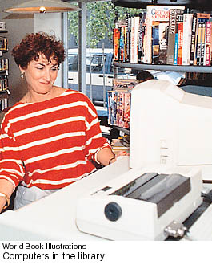

2. The invention of the transistor (1947)
This invention by American
physicists John Bardeen, Walter Brattain, and William Shockley revolutionized
the way we can construct electronic circuits and led to the development
of our modern microcomputers. The computer is considered by some to
be the most unpredicted phenomenon of the 1900's although it is
now hard to imagine life without it.

In addition to changing our
daily lives, the computer made it possible to store, analyze, and retrieve
the large amounts of data that allow doctors to use three-dimensional
imaging to diagnose a patient's medical condition. In addition, the
computer enables a chemist to design drugs that have exactly the right
molecular structure to "fit" into a computerized image of a target molecule.
It also permits our astronauts to travel to the moon. It allows librarians
to store the entire contents of the Library of Congress on a few specialized
computer disks.
|